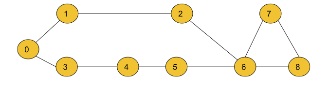
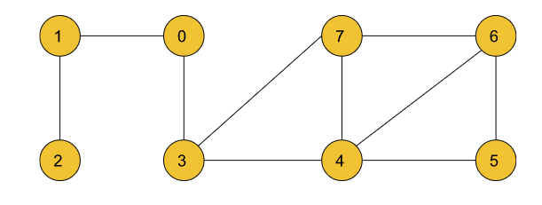
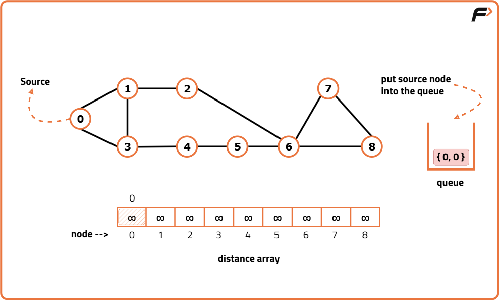
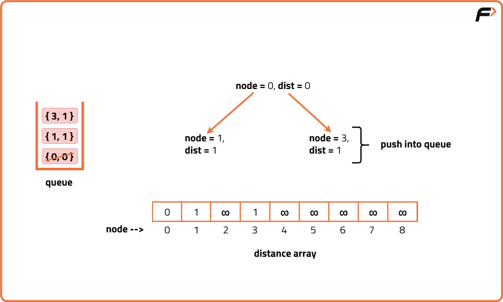
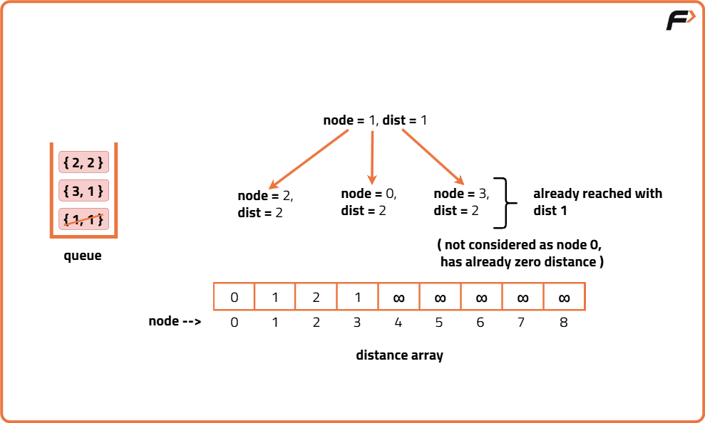
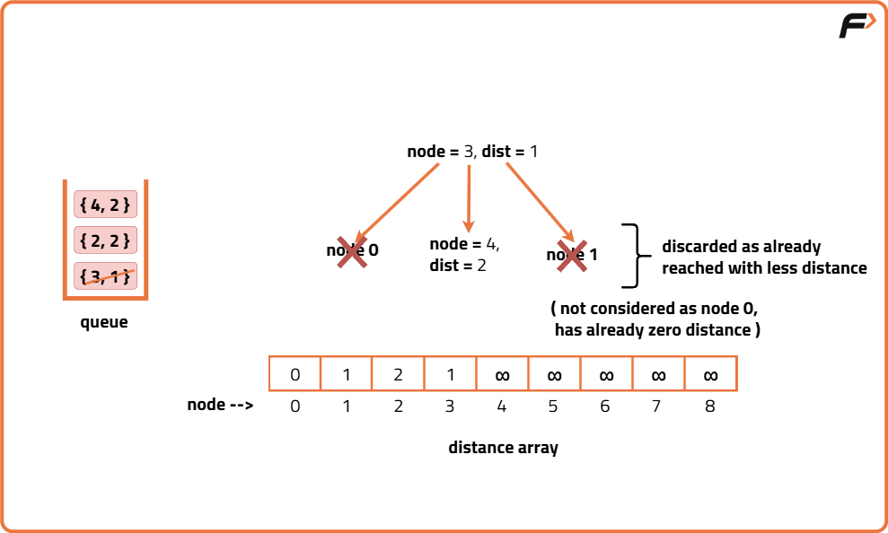
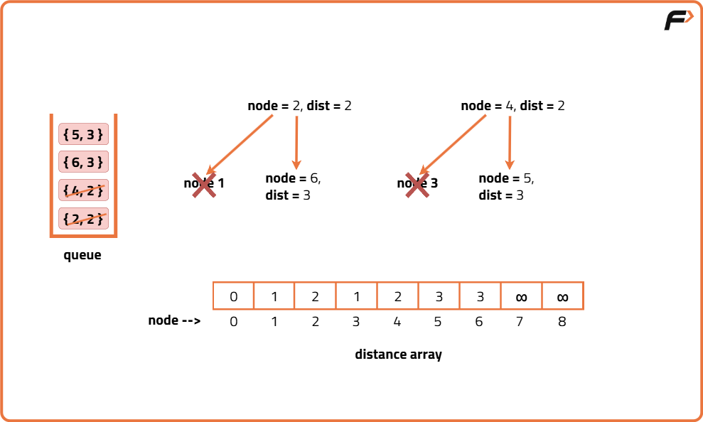
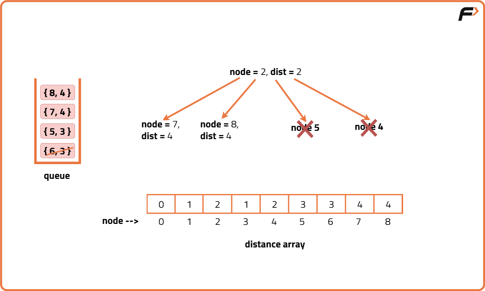
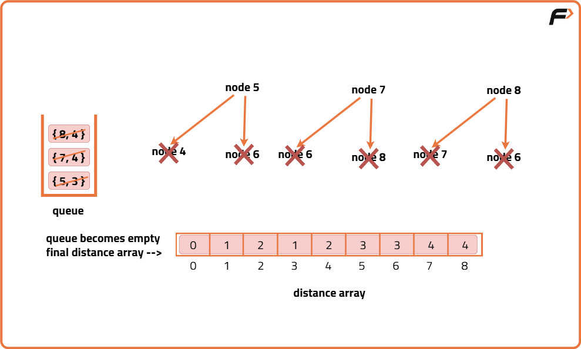

Shortest Path in Undirected Graph with unit distance: G-28
Archived from https://takeuforward.org/data-structure/shortest-path-in-undirected-graph-with-unit-distance-g-28/
Problem Statement: Given an Undirected Graph having unit weight, find the shortest path from the source to all other nodes in this graph. In this problem statement, we have assumed the source vertex to be ‘0’. If a vertex is unreachable from the source node, then return -1 for that vertex.
Examples
Input: n = 9, m = 10 edges = [[0,1],[0,3],[3,4],[4 ,5],[5,6],[1,2],[2,6],[6,7],[7,8],[6,8]] src = 0
Output: 0 1 2 1 2 3 3 4 4
Explanation: The above output array shows the shortest path to all the nodes from the source vertex (0). Dist[0] = 0, Dist[1] = 1, Dist[2] = 2, … Dist[8] = 4 Where Dist[node] is the shortest distance from the source to that node. If Dist[node] = -1, then that node is unreachable from the source.

Input: n = 8, m = 10 edges = [[1,0],[2,1],[0,3],[3,7],[3,4],[7,4],[7,6],[4,5],[4,6],[6,5]] src = 0
Output: 0 1 2 1 2 3 3 2
Explanation: The above output list shows the shortest path to all the nodes from the source vertex (0). Dist[0] = 0, Dist[1] = 1, Dist[2] = 2, … Dist[7] = 2 Again, any node with Dist[node] = -1 is unreachable from the source.

Disclaimer: Here is the practice link to help you assess your knowledge better. It's highly recommend trying to
solve it before looking at the solution.
Approach
Algorithm
We calculate the shortest path in an undirected graph with unit weights using Breadth First Search (BFS).
BFS visits all nodes level-by-level (same level first), which ensures we always get the shortest path in terms of number of edges.
Initial configuration:
Adjacency List: A list where each index represents a node, and the value is a list of pairs (adjacent node, distance from current node).
Queue: Standard queue to help perform BFS traversal level by level.
Distance Array: Initialized with `INT_MAX` or a very large number to represent "unreachable". Updated during traversal.
Resultant Array: Initialized with -1 to store the shortest distance from source to every node. If a node is unreachable, it stays -1.
Steps to find shortest path in undirected graph:
Convert the graph to an adjacency list.
Create a distance array of size N initialized with a very large number.
Perform BFS traversal starting from the source.
For each node in the queue, check its neighbors.
If the path to a neighbor through the current node is shorter (i.e., current distance + 1 < neighbor's recorded distance), update the neighbor's distance and push it to the queue.
Post traversal:
After BFS completes, the distance array holds the shortest path lengths from the source.
Create a final result array initialized with -1.
For all nodes where distance was updated from the initial large value, update the result array with actual distance.
Nodes that remain -1 are unreachable.
Why BFS is used:
All edges have unit weight. So as we explore adjacent nodes, they are at a fixed increment of distance (1, 2, 3…).
This behavior naturally fits BFS because the queue automatically ensures we’re processing closer nodes first.
BFS acts like a sorted queue for level-wise distances, so we don’t need extra data structures like a min-heap (unlike Dijkstra).







Code
#include <bits/stdc++.h>
using namespace std;
class Solution {
public:
// Function to find the shortest path from source to all vertices
vector<int> shortestPath(vector<vector<int>>& edges, int N, int M, int src) {
// Create an adjacency list of size N to store the undirected graph
vector<int> adj[N];
// Build the graph by adding edges to the adjacency list
for (auto it : edges) {
adj[it[0]].push_back(it[1]);
adj[it[1]].push_back(it[0]);
}
// Initialize the distance array with a large value (treated as infinity)
int dist[N];
for (int i = 0; i < N; i++)
dist[i] = 1e9;
// Set the source node distance to 0
dist[src] = 0;
// Use a queue to perform BFS traversal
queue<int> q;
// Start BFS from the source node
q.push(src);
// Loop until queue is empty
while (!q.empty()) {
// Get the front node from the queue
int node = q.front();
q.pop();
// Traverse all adjacent nodes
for (auto it : adj[node]) {
// If a shorter path to neighbor is found
if (dist[node] + 1 < dist[it]) {
dist[it] = 1 + dist[node];
q.push(it);
}
}
}
// Initialize the result array with -1 for unreachable nodes
vector<int> ans(N, -1);
// Fill in the result array with distances where reachable
for (int i = 0; i < N; i++) {
if (dist[i] != 1e9) {
ans[i] = dist[i];
}
}
// Return the final shortest distances
return ans;
}
};
// Driver code
int main() {
// Number of vertices and edges
int N = 9, M = 10;
// Edge list representing the undirected graph
vector<vector<int>> edges = {
{0, 1}, {0, 3}, {3, 4}, {4, 5}, {5, 6},
{1, 2}, {2, 6}, {6, 7}, {7, 8}, {6, 8}
};
// Create object of Solution class
Solution obj;
// Call the shortestPath function with source as node 0
vector<int> ans = obj.shortestPath(edges, N, M, 0);
// Print the shortest distances from source to each node
for (int i = 0; i < ans.size(); i++) {
cout << ans[i] << " ";
}
return 0;
}
import java.util.*;
class Solution {
// Function to compute shortest path using BFS
public int[] shortestPath(int[][] edges, int N, int M, int src) {
// Create adjacency list for undirected graph
List<List<Integer>> adj = new ArrayList<>();
for (int i = 0; i < N; i++) {
adj.add(new ArrayList<>());
}
// Fill adjacency list from edge list
for (int[] edge : edges) {
adj.get(edge[0]).add(edge[1]);
adj.get(edge[1]).add(edge[0]);
}
// Initialize distance array with large value (infinity)
int[] dist = new int[N];
Arrays.fill(dist, (int) 1e9);
// Set source distance to 0
dist[src] = 0;
// Initialize queue for BFS
Queue<Integer> q = new LinkedList<>();
q.add(src);
// BFS traversal
while (!q.isEmpty()) {
int node = q.poll();
// Traverse neighbors
for (int neighbor : adj.get(node)) {
if (dist[node] + 1 < dist[neighbor]) {
dist[neighbor] = dist[node] + 1;
q.add(neighbor);
}
}
}
// Prepare result, replacing infinity with -1
for (int i = 0; i < N; i++) {
if (dist[i] == (int) 1e9) {
dist[i] = -1;
}
}
return dist;
}
}
// Driver code
class Main {
public static void main(String[] args) {
int N = 9, M = 10;
int[][] edges = {
{0, 1}, {0, 3}, {3, 4}, {4, 5}, {5, 6},
{1, 2}, {2, 6}, {6, 7}, {7, 8}, {6, 8}
};
Solution obj = new Solution();
int[] result = obj.shortestPath(edges, N, M, 0);
for (int val : result) {
System.out.print(val + " ");
}
}
}
from collections import deque, defaultdict
class Solution:
# Function to find shortest path using BFS
def shortestPath(self, edges, N, M, src):
# Create adjacency list
adj = defaultdict(list)
for u, v in edges:
adj[u].append(v)
adj[v].append(u)
# Initialize distance array with infinity
dist = [float('inf')] * N
# Distance from src to itself is 0
dist[src] = 0
# Queue for BFS
q = deque()
q.append(src)
# Perform BFS
while q:
node = q.popleft()
for neighbor in adj[node]:
if dist[node] + 1 < dist[neighbor]:
dist[neighbor] = dist[node] + 1
q.append(neighbor)
# Replace unreachable distances with -1
for i in range(N):
if dist[i] == float('inf'):
dist[i] = -1
return dist
# Driver code
N = 9
M = 10
edges = [
[0, 1], [0, 3], [3, 4], [4, 5], [5, 6],
[1, 2], [2, 6], [6, 7], [7, 8], [6, 8]
]
obj = Solution()
result = obj.shortestPath(edges, N, M, 0)
print(" ".join(map(str, result)))
class Solution {
// Function to find shortest path using BFS
shortestPath(edges, N, M, src) {
// Create adjacency list
const adj = Array.from({ length: N }, () => []);
for (let [u, v] of edges) {
adj[u].push(v);
adj[v].push(u);
}
// Initialize distances with Infinity
const dist = Array(N).fill(Infinity);
dist[src] = 0;
// Queue for BFS
const q = [];
q.push(src);
// Perform BFS
while (q.length > 0) {
const node = q.shift();
for (let neighbor of adj[node]) {
if (dist[node] + 1 < dist[neighbor]) {
dist[neighbor] = dist[node] + 1;
q.push(neighbor);
}
}
}
// Replace unreachable nodes with -1
for (let i = 0; i < N; i++) {
if (dist[i] === Infinity) {
dist[i] = -1;
}
}
return dist;
}
}
// Driver code
const N = 9, M = 10;
const edges = [
[0, 1], [0, 3], [3, 4], [4, 5], [5, 6],
[1, 2], [2, 6], [6, 7], [7, 8], [6, 8]
];
const obj = new Solution();
const result = obj.shortestPath(edges, N, M, 0);
console.log(result.join(" "));
Complexity Analysis
Time Complexity: O(M) { for creating the adjacency list from given list ‘edges’} + O(N + 2M) { for the BFS Algorithm} + O(N) { for adding the final values of the shortest path in the resultant array} ~ O(N+2M). Where N= number of vertices and M= number of edges.
Space Complexity: O(N) {for the stack storing the BFS} + O(N) {for the resultant array} + O(N) {for the dist array storing updated shortest paths} + O( N+2M) {for the adjacency list} ~ O(N+M),Where N= number of vertices and M= number of edges.